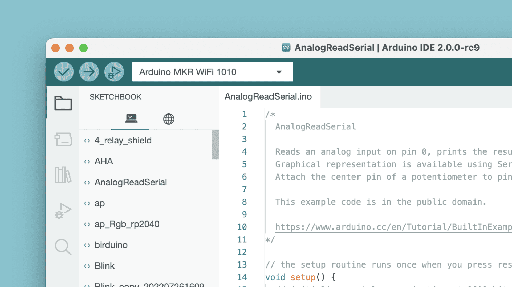
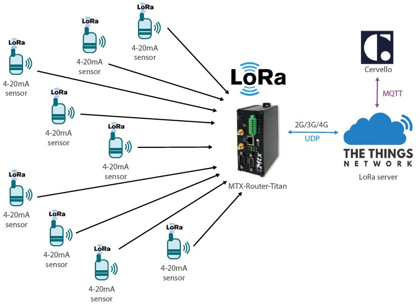
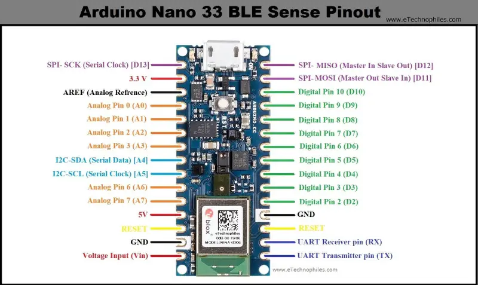

ASSET TRACKING
Arduino IDE 2.2.1
The new major release of the Arduino IDE is faster and even more powerful! In addition to a more modern editor and a more responsive interface it features autocompletion, code navigation, and even a live debugger.
For more details, please refer to the Arduino IDE 2.0 documentation.
Nightly builds with the latest bugfixes are available through the section below.
The Arduino IDE 2.0 is open source and its source code is hosted on GitHub.
Node-RED

Node-RED is a programming tool for wiring together hardware devices, APIs and online services in new and interesting ways.
Node-RED is a flow-based, low-code development tool for visual programming developed originally by IBM for wiring together hardware devices, APIs and online services as part of the Internet of Things.[3]
Node-RED provides a web browser-based flow editor, which can be used to create JavaScript functions. Elements of applications can be saved or shared for re-use. The runtime is built on Node.js. The flows created in Node-RED are stored using JSON. Since version 0.14, MQTT nodes can make properly configured TLS connections.[4]
In 2016, IBM contributed Node-RED as an open source OpenJS Foundation project.
It provides a browser-based editor that makes it easy to wire together flows using the wide range of nodes in the palette that can be deployed to its runtime in a single-click.
LoRa
LoRa is a physical proprietary radio communication technique. It is based on spread spectrum modulation techniques derived from chirp spread spectrum technology. It was developed by Cycleo, a company of Grenoble, France, and patented in 2014.LoRa, an abbreviation for “Long Range,” represents a transformative wireless communication technology designed to bridge the gap between the Internet of Things (IoT) and long-distance data transmission. This remarkable technology operates within the unlicensed radio frequency spectrum, often in the globally available Industrial, Scientific, and Medical (ISM) bands, allowing for worldwide deployment.
At the heart of LoRa’s capabilities is its exceptional range. It can transmit data over considerable distances, extending across several kilometers, even when faced with challenging environments or signal interference. This unique characteristic makes it a game-changer for applications requiring communication over expansive geographic areas.
Furthermore, LoRa stands out for its incredibly low power consumption, enabling devices to operate on minimal energy. This extended battery life is a critical advantage, particularly for remote and battery-powered devices like IoT sensors.
Although LoRa offers a relatively modest data transfer rate compared to high-speed wireless technologies, its primary focus is to provide reliable, long-range communication while conserving power. This approach is a boon for applications prioritizing range and energy efficiency over rapid data transmission.
LoRa technology also boasts scalability, capable of efficiently handling a multitude of connected devices, making it an excellent fit for applications demanding the simultaneous tracking or monitoring of numerous assets. Its versatility is evident in its wide range of applications, spanning agriculture, logistics, smart cities, environmental monitoring, and industrial IoT, to name just a few.
With its secure communication features and open standard design, LoRa technology is a robust choice for industries and applications seeking to achieve efficient, long-distance data connectivity while maintaining security and reliability. In summary, LoRa is a transformative force in wireless communication, making it an essential player in the dynamic landscape of IoT and asset tracking solutions.
Arduino Nano 33 BLE Sense
The Arduino Nano 33 BLE Sense is a small development board that can connect via Bluetooth Low Energy. It has a Cortex-M4 microcontroller, motion sensors, a microphone, and sensors to detect color, proximity, temperature, humidity, and audio.
The board is 45x18mm and runs at 3.3V.
It’s a pin-equivalent substitute for the Arduino Nano, so your code will still work. However, you need to revise your original design if it’s not 3.3V compatible.
TinyML, on the other hand, can be defined as a subfield of ML which pursues enabling ML applications on devices that are cheap, as well as resource- and power-constrained.
The objective of TinyML is to bring machine learning to the edge in an extreme way, where battery-powered, microcontroller-based embedded devices can perform ML tasks with real-time responsivity. This effort is extraordinarily multidisciplinary, requiring optimization and maximization from fields including hardware, software, data science, and machine learning.
The field has largely been gaining popularity in recent years due to the maturation of the hardware and software ecosystems that underlie it.